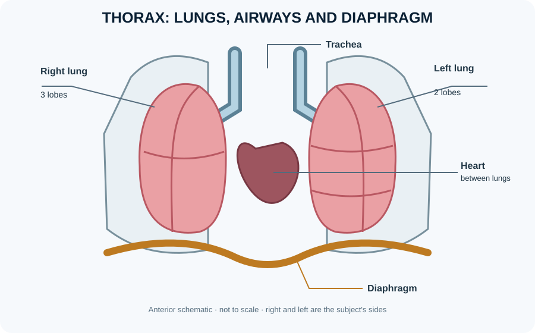

Ventilation, perfusion and matching in the lungs
Effective gas exchange requires air reaching alveoli (ventilation) to be matched with blood flow through pulmonary capillaries (perfusion). The ventilation–perfusion ratio varies across the lung and with posture, disease and exercise. Low ventilation relative to perfusion can reduce oxygenation, while ventilated but poorly perfused alveoli contribute to physiological dead space. Shunt describes blood passing through regions that receive little or no ventilation; diffusion limitation occurs when gas transfer across the alveolar-capillary barrier is inadequate for the required conditions. These mechanisms can coexist in the same patient.
Learning objectives
- Define ventilation, perfusion and the ventilation–perfusion ratio.
- Distinguish low V/Q, dead space and shunt.
- Explain why lung disease can impair oxygenation through different mechanisms.
High-yield study points
- Ventilation delivers fresh gas to alveoli; perfusion delivers blood to alveolar capillaries.
- Low V/Q units receive blood flow that is inadequately ventilated and can lower arterial oxygenation.
- Dead-space ventilation occurs when ventilation is not matched by adequate perfusion.
- Diffusion depends on surface area, barrier thickness, gas properties and partial-pressure gradients.
- Supplemental oxygen can improve many low-V/Q states but may be less effective in a substantial true shunt.
Clinical connection
Breathlessness and low oxygen saturation can arise from several mechanisms. Clinical assessment integrates respiratory effort, oxygen measurements, examination and investigations.
Check your understanding
- What does the ventilation–perfusion ratio compare?
Reveal answer
Alveolar ventilation (V) relative to pulmonary perfusion (Q).
- What happens to gas exchange when an alveolus is ventilated but receives little blood flow?
Reveal answer
Its V/Q ratio is high, and ventilation is relatively wasted because little blood is available to exchange gases.
- Why can a pulmonary embolus impair gas exchange?
Reveal answer
It reduces perfusion to ventilated regions, creating high V/Q units and increasing physiological dead space.
Visual orientation: ventilation and pulmonary gas exchange

Ventilation is air reaching alveoli; perfusion is blood reaching pulmonary capillaries. Effective gas exchange depends on matching the two. A low ventilation-perfusion ratio means ventilation is inadequate relative to blood flow; a high ratio means ventilation is excessive relative to perfusion. A true shunt is the extreme of perfusion without ventilation, while dead space is ventilation without effective perfusion.
Further reading
OpenStax, Anatomy and Physiology 2e — respiratory physiology, gas exchange and transport.